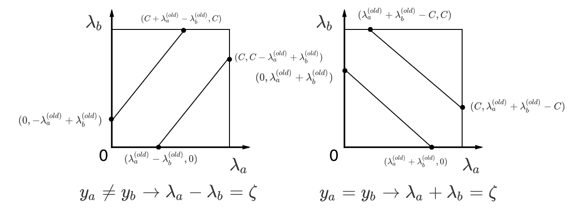

SMO算法原理和分析
SVM中的二次规划问题
$$\max \limits_{\lambda} \sum_{i=1}^{m} \lambda_i - \frac{1}{2} \sum_{i=1}^{m} \sum_{j=1}^{m} \lambda_i \lambda_j y_i y_j K(x_i, x_j) \tag{1}$$
$$\begin{align} s.t. \quad & \sum_{i=1}^{m} \lambda_i y_i = 0, \ & 0 \le \lambda_i \le C ,i=1,2,…,m. \end{align}$$
这里，$K(x_i, x_j)$表示核函数，一般的有$K(x_i, x_j)=x_i^T x_j$。求解这个凹函数，需要优化$\lambda_i$，直接给出解析解比较困难，所以使用SMO算法求解。
如何修改$\lambda$参数
SMO算法的思想是从$(\lambda_1,\lambda_2,…,\lambda_m)$中取出2个参数，固定其他参数，每次只优化这2个参数。所以，公式(1)可以转化为
$$\begin{align} \max \limits_{\lambda_a, \lambda_b} \phi(\lambda_a, \lambda_b) = & \sum_{i \ne a,b}^{m} \lambda_i + (\lambda_a + \lambda_b) - \frac{1}{2} \sum_{i \ne a,b}^{m} \sum_{j \ne a,b}^{m} \lambda_i \lambda_j y_i y_j K(x_i, x_j) - \frac{1}{2} \lambda_a^2 y_a^2 K(x_a, x_a) - \frac{1}{2} \lambda_b^2 y_b^2 K(x_b, x_b) \ & - \lambda_a \lambda_b y_a y_b K(x_a, x_b) - \sum_{i \ne a,b}^{m} \lambda_i y_i K(x_a, x_i) \lambda_a y_a - \sum_{i \ne a,b}^{m} \lambda_i y_i K(x_b, x_i) \lambda_b y_b \end{align} \tag{2}$$
设
$$K_{ab} = K(x_a, x_b), K_{aa} = K(x_a, x_a), K_{bb} = K(x_b, x_b) \tag{3}$$
$$G_a = \sum_{i \ne a,b}^{m} \lambda_i y_i K(x_a, x_i), G_b = \sum_{i \ne a,b}^{m} \lambda_i y_i K(x_b, x_i) \tag{4}$$
$$Constant = \sum_{i \ne a,b}^{m} \lambda_i - \frac{1}{2} \sum_{i \ne a,b}^{m} \sum_{j \ne a,b}^{m} \lambda_i \lambda_j y_i y_j K(x_i, x_j) \tag{5}$$
所以，公式(2)可以转化为
$$\begin{align} \max \limits_{\lambda_a, \lambda_b} \phi(\lambda_a, \lambda_b) = & (\lambda_a + \lambda_b) - \frac{1}{2} K_{aa} \lambda_a^2 - \frac{1}{2} K_{bb} \lambda_b^2 - y_a y_b K_{ab} \lambda_a \lambda_b \ & - G_a y_a \lambda_a - G_b y_b \lambda_b + Constant \end{align} \tag{6}$$
因为，$\sum_{i=1}^{m} \lambda_i y_i = 0$，所以
$$\lambda_a y_a + \lambda_b y_b = - \sum_{i \ne a,b}^{m} \lambda_i y_i = \zeta \tag{7}$$
即
$$\lambda_a = y_a (\zeta - \lambda_b y_b) \tag{8}$$
将式(8)带回式(6)，得到
$$\begin{align} \max \limits_{\lambda_a} \phi(\lambda_a) = & - \frac{1}{2} (K_{aa} - 2 K_{ab} + K_{bb}) \lambda_a^2 + y_a (y_a - y_b + K_{bb} \zeta - K_{ab} \zeta) \lambda_a \ & - G_a y_a \lambda_a + G_b y_a \lambda_a + Contant^{‘} \end{align} \tag{9}$$
其中，
$$Contant^{‘} = Contant + y_b \zeta - \frac{1}{2} K_{bb} \zeta^2 -G_b \zeta \tag{10}$$
求式(9)的偏导数，使其等于0。
$$\frac{\partial \phi(\lambda_a)}{\partial \lambda_a} = - (K_{aa} - 2 K_{ab} + K_{bb}) \lambda_a + y_a (y_a - y_b + K_{bb} \zeta - K_{ab} \zeta) - G_a y_a + G_b y_a = 0 \tag{11}$$
因此
$$(K_{aa} - 2 K_{ab} + K_{bb}) \lambda_a = y_a (y_a - y_b + K_{bb} \zeta - K_{ab} \zeta) - G_a y_a + G_b y_a \tag{12}$$
下面化简上面的公式，不难得知
$$\zeta = \lambda_a^{(old)} y_a + \lambda_b^{(old)} y_b \tag{13}$$
又因为
$$\begin{align} G_a = & \sum_{i \ne a,b}^{m} \lambda_i y_i K(x_a, x_i) \ = & f(x_a) - b - \lambda_a y_a K(x_a, x_a) - \lambda_b y_b K(x_a, x_b) \end{align} \tag{14}$$
因为$G_a$是一个常数，不随$\lambda_a, \lambda_b$变化而变化，因此
$$\begin{align} G_a = f(x_a) - b - \lambda_a^{(old)} y_a K(x_a, x_a) - \lambda_b^{(old)} y_b K(x_a, x_b) \end{align} \tag{15}$$
同理可以得到$G_b$。将$G_a, G_b$和式(13)带回公式(12)，化简可得
$$(K_{aa} - 2 K_{ab} + K_{bb}) \lambda_a = y_a (y_a - y_b - f(x_a) + f(x_b)) + (K_{aa} - 2 K_{ab} + K_{bb}) \lambda_a^{(old)} \tag{16}$$
进一步得到
$$\begin{align} \lambda_a = & \lambda_a^{(old)} + \frac{y_a (y_a - y_b - f(x_a) + f(x_b))}{(K_{aa} - 2 K_{ab} + K_{bb})} \ = & \lambda_a^{(old)} + \frac{y_b(E_a - E_b)}{\eta} \end{align} \tag{17}$$
其中
$$\eta = K(x_a, x_a) - 2 K(x_a, x_b) + K(x_b, x_b) \ E_a = f(x_a) - y_a \ E_a = f(x_b) - y_b \tag{18}$$
$\lambda$的约束

最优解必须要在方框内的直线上取得，同时因为$\zeta$的正负不知道，所以要求同时满足2条线的约束。
$$L \le \lambda_a^{(new)} \le H \ y_a \ne y_b, L = \max(0, \lambda_a^{(old)} - \lambda_b^{(old)}); H = \min(C + \lambda_a^{(old)} - \lambda_b^{(old)}, C) \ y_a = y_b, L = \max(0, \lambda_a^{(old)} + \lambda_b^{(old)} - C); H = \min(\lambda_a^{(old)} + \lambda_b^{(old)}, C) \tag{19}$$
临界条件
根据公式(11)可知，目标函数$\phi(\lambda_a)$是个二次函数，并且$\eta = K(x_a, x_a) - 2 K(x_a, x_b) + K(x_b, x_b)$一般情况下大于0。如下2种情况，$\lambda_a$需要取临界值L和H。
- 当$\eta < 0$时，目标函数是凹函数，没有极大值，极值在边界处；
- 当$\eta = 0$时，$x_a$和$x_b$的特征相同，目标函数为单调函数，在边界处取值。
根据$\lambda_a^{(new)} y_a + \lambda_b^{(new)} y_b = \lambda_a^{(old)} y_a + \lambda_b^{(old)} y_b$，计算$\lambda_b$的上下限。
$$L_b = \lambda_a + y_a y_b (\lambda_a - L_a) \ H_b = \lambda_a + y_a y_b (\lambda_a - H_a) \tag{20}$$
将式(20)带入公式(2)中，比较$\phi(L_a, L_b)$和$\phi(H_a, H_b)$的大小，选择较大的$\lambda$点作为最优值。